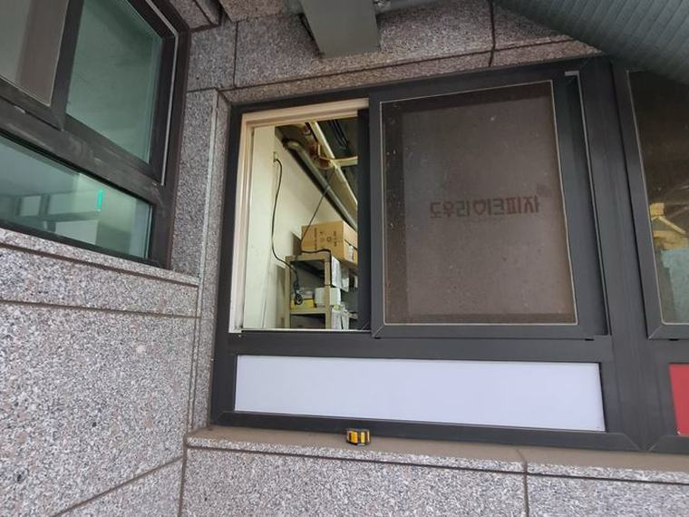
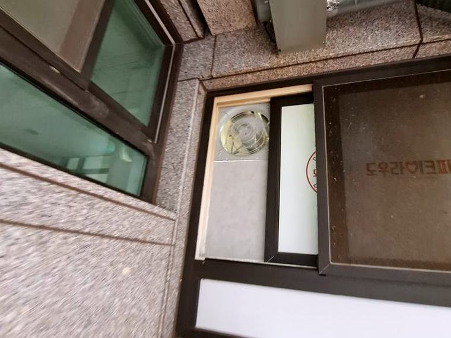

수원 환풍기 출장설치 — 방문 진단부터 마감 확인까지 하루에 끝냅니다
- 주요 방문 권역
- 팔달구·영통구·권선구·장안구·광교
- 대표 현장
- 음식점 주방 · 아파트 · 상가 매장
- 상담 · 예약
- 010-2680-4538 (08:00~20:00)
시공 전 · 후

시공 전
시공 후수원 현장 이야기
수원 환풍기 출장설치를 문의는 멀리서 오는 헛걸음을 줄이는 것이 핵심입니다. 사진과 치수를 먼저 받아 장비와 제품을 준비해 갑니다. 수원은 구도심 상가와 광교·영통의 신축 아파트가 함께 있는 지역입니다. 저희가 수원에서 받는 연락도 영업 중이라 공사 시간을 길게 낼 수 없는 경우가 가장 많습니다.
출장 설치는 사전 확인이 절반입니다. 사진과 대략적인 치수를 먼저 받아 벽체 상태와 배기 경로를 검토하고, 필요한 장비와 제품을 준비해 방문하기 때문에 대부분 하루 안에 끝납니다. 타공이 필요한 현장은 분진 보양까지 준비해 가고, 작업 후 나온 자재는 정리한 뒤 마무리합니다.
수원 환풍기 출장설치 상담을 진행할 때 수원에서 특히 신경 쓰는 부분이 있습니다. 본사에서 가까워 오전에 연락 주시면 당일 오후 확인이 되는 경우가 많습니다. 주요 방문 권역은 팔달구·영통구·권선구·장안구·광교이며, 음식점 주방 · 아파트 · 상가 매장 현장을 자주 다룹니다.
현장에서는 기존 배기 통로가 살아 있는지부터 확인합니다. 통로가 막혀 있으면 새 제품을 달아도 효과가 없기 때문에, 그 경우 청소나 경로 변경을 먼저 안내드리고 나서 제품을 정합니다. 들어오는 공기 통로가 없는 현장은 급기까지 함께 계획해야 실제 배출량이 나옵니다. 시공을 마친 뒤에는 실제로 공기가 도는지 풍량과 소음, 진동을 확인하고 현장을 정리한 뒤 마칩니다.
수원 환풍기 출장설치를 고민 중이시라면 사진 한 장만 보내주세요. 현장 상태만 봐도 가능한 방식이 좁혀져 불필요한 방문을 줄일 수 있습니다.
진행 순서
현장 사진 전송
공간 안팎 사진과 대략적인 크기를 문자로 보내주시면 상황을 파악합니다
방문 진단·견적
배출 압력과 구조를 직접 확인한 뒤 방식과 비용을 알려드립니다
당일 시공
약속한 날짜에 방문해 설치·배선·마감까지 한 번에 진행합니다
작동 확인
실제 배출량과 소음 수준을 함께 점검한 뒤 인도합니다
수원 환풍기 출장설치, 사진 한 장이면 됩니다
현장 사진과 대략적인 크기를 문자로 보내주시면 방문 전에 방식과 비용을 알려드립니다.